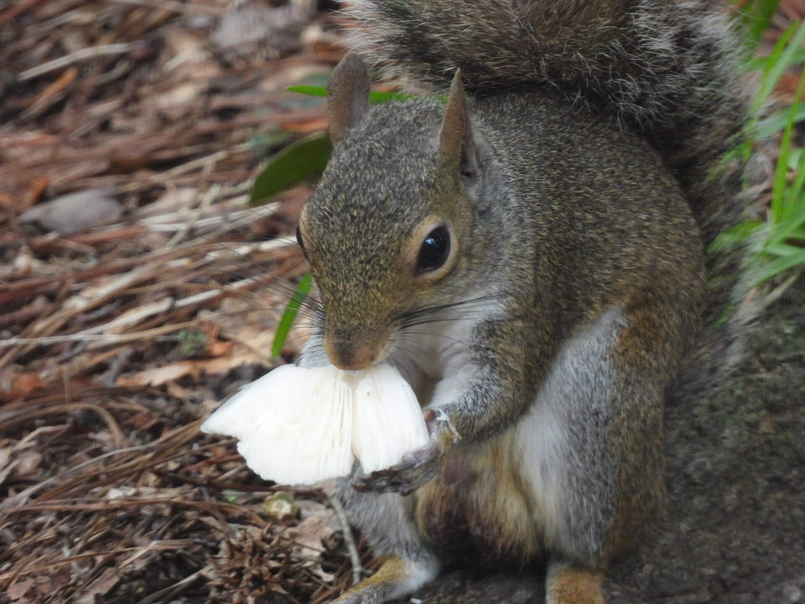
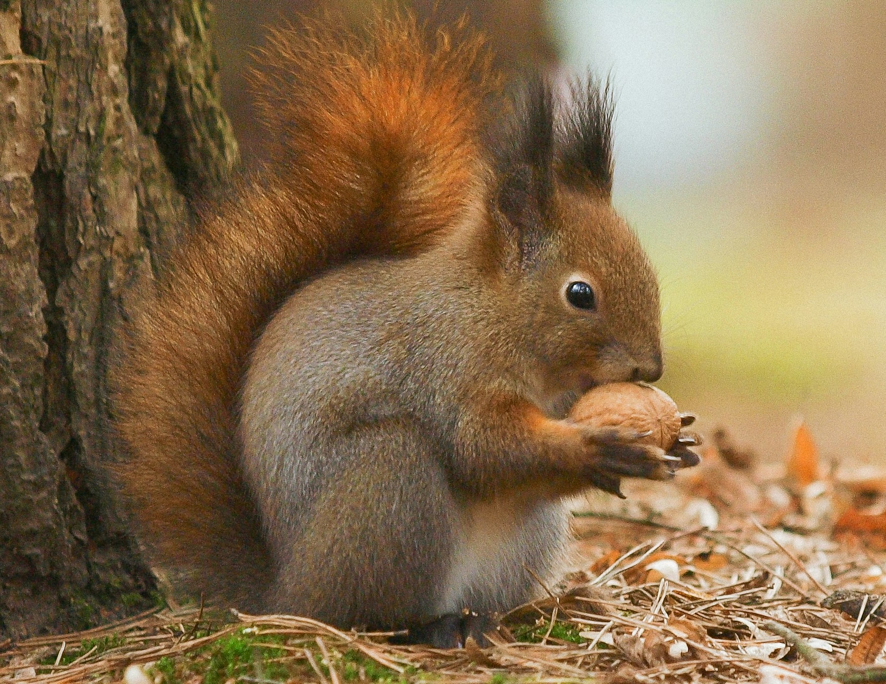
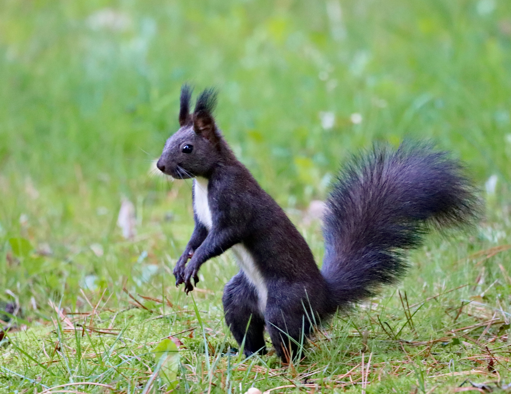

Eastern Gray Squirrel
The eastern gray squirrel (Sciurus carolinensis), spelled as grey squirrel outside of the United States, is
a species of tree squirrel in the genus Sciurus. It is native to eastern North America, where it is the most
prodigious and ecologically essential natural forest regenerator. Widely introduced to certain places around
the world, the eastern gray squirrel in Europe, in particular, is regarded as an invasive species.
Habitat:
mature, dense woodland ecosystems containing large mast-producing trees such as oaks and hickories. Dens are
constructed upon large tree branches and hollow trunks. They tend to have 2-3 dens at the same time!
Diet:
Eastern gray squirrels eat a range of foods, such as many types of seeds and nuts, including acorns,
walnuts, and hazelnuts, bulbs, tree buds, flowers, berries, other fruits, tree bark, and some types of
forest fungi. They are also carnivorous, variously eating insects, small birds, eggs, frogs, lizards, and
other small rodents, including other squirrels. They also raid gardens for wheat, tomatoes, corn,
strawberries, and other crops. They will similarly raid bird feeders for millet, corn, and sunflower seeds.
Appearance:
Generally, the eastern gray squirrel has predominantly gray fur with brown spots and streaks. It has a white
underside and a large bushy tail. They also come in several other color mutations: melanistic (all black),
melanistic with a red tail, leucistic (white), and albino (white with red eyes).

Eurasian Red Squirrel
The red squirrel (Sciurus vulgaris), also called Eurasian red squirrel, is a species of tree squirrel in the
genus Sciurus. It is an arboreal and primarily herbivorous rodent and is common throughout Eurasia.
Habitat:
Found in both coniferous forests and temperate broadleaf woodlands. They can also be found in mixed forests,
deciduous forests, parklands, and suburban areas.
Diet:
The red squirrel eats mostly the seeds of trees, especially conifers, neatly stripping cones to get at the
seeds within, alongside acorns and nuts. Other food sources include fruits and berries, fungi, lichens,
young plant shoots, vegetables, garden flowers, and tree sap. They may also eat invertebrates, bird eggs, or
nestlings in very rare cases.
Appearance:
Coat is dark but otherwise highly variable. There are several coat colour morphs, ranging through red,
reddish-brown, brown, bright chestnut, gray, black, and bluish. Red coats are most common in Great Britain;
in other parts of Europe and Asia different coat colours coexist within populations, much like different
hair colors in humans. Melanism is common. The underside of the squirrel is always white-cream in colour.
The red squirrel sheds its coat twice a year, switching from a thinner summer coat to a thicker, darker
winter coat with noticeably larger ear-tufts between August and November

Calabrian Black Squirrel
The Calabrian black squirrel (Sciurus meridionalis) is a species of tree squirrel in the genus Sciurus,
endemic to the forests of the regions of Calabria and Basilicata, in the south of the Italian Peninsula.
Habitat:
mixed forests in highlands, and its nests are often placed in pine or oak trees.
Diet:
Black pine seeds, berries, male flowers, chestnuts and beechnuts.
Appearance:
Monomorphic (not variable in appearance), being very dark brown to blackish with contrasting white
underparts. Compared to red squirrels of northern Italy, the Calabrian black squirrel is also significantly
larger, weighing on average about 35% more.